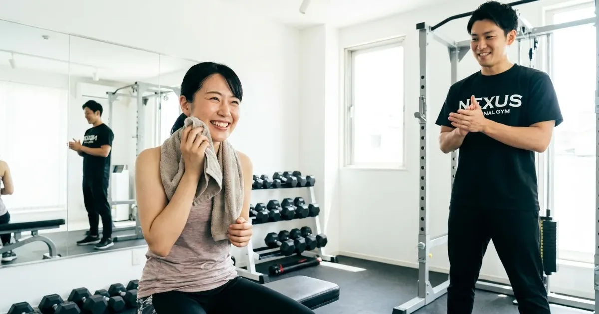

— Articles
このカテゴリの記事
産後のパーソナルジムはいつから？ジム経営者が答える「始めてよい時期」と最初の3か月でやること
目安は1か月健診の許可後、本格的な筋トレは3か月以降。帝王切開の場合、授乳中の食事指導、最初の3か月の順番まで。

薬で痩せた後に筋肉を守る食事と運動｜ジム経営者が自分の体で試して分かったこと
「痩せたのにたるむ」を防ぐ。食事量が減った中でタンパク質を確保する組み方、週2回でいい筋トレの中身、有酸素運動の落とし穴まで。

パーソナルジムで痩せない人の共通点。辞めていく人の傾向から分かること
原因の大半は体質でも努力不足でもなく「仕組み」。食事報告・来店回数・測り方・睡眠の6つの差を現場目線で。
パーソナルジムの入会金・総額の相場。「安い」の裏にある料金の仕組みを運営側が説明します
2か月の総額の中心は25万〜40万円。入会金の正体、月額制と回数制の違い、見積もりで確認する5項目まで。
GLP-1をやめた後にリバウンドする人・しない人の違い。ジムの現場で見ている分かれ目
戻るかどうかは「使っている間」で決まる。筋肉の材料・食べ方の型・運動の予定、3つの分かれ目を現場目線で。
GLP-1で13kg痩せた私が、ジム経営者としてあえて言うこと
85kgから72kgへ。「食欲が落ちる」の本当の意味、活力を失った日々、筋肉がつかなかった理由を正直に。
パーソナルジムは2ヶ月で何キロ痩せる？加盟店オーナーが現実的な数字を正直に話します
現実的なラインは「今の体重の5〜8%」。体重別の目安、落ちやすい人・落ちにくい人の違いまで。
記事は順次追加予定です。パーソナルジムの料金相場、失敗しない選び方などを、加盟店オーナーの現場目線でお届けします。